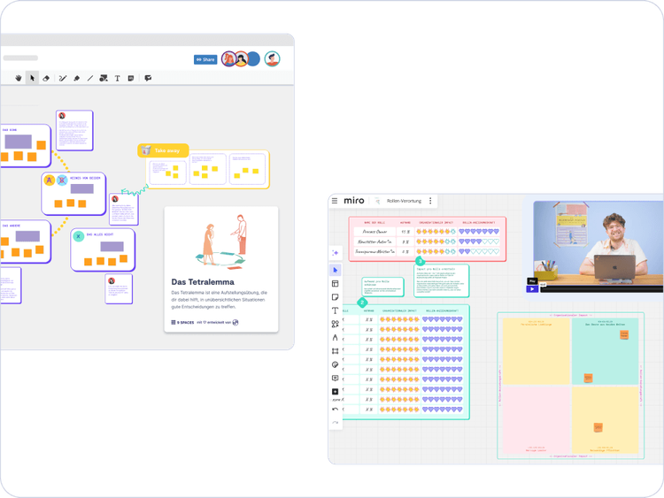

Business
ab 5 Nutzer*innen
Zugang für ausgewählte Nutzer*innen
Mit über 150 erprobten Methoden unterstützt 9 Spaces Organisationen im öffentlichen Sektor dabei, die Digitalisierung voranzutreiben, Zusammenarbeit zu verbessern und Prozesse effizienter zu gestalten.
Diese Seite ist für alle, die die Arbeitswelt im öffentlichen Sektor wirklich voranbringen wollen.
Der öffentliche Sektor steht vor großen Veränderungen. Mit unseren Tools unterstützen wir euch bei der Digitalisierung und Modernisierung – mit PDF-Handouts zum Ausdrucken, Whiteboard-Templates (Miro & Conceptboard) und Video-Anleitungen. Zusätzlich bieten wir ein Planungs-Tool für eure Transformationsreise und den KI-Facilitator, der euch passende Workshops vorschlägt.
Themen, die wir abdecken: Meetings, Teamgefühl, Leadership, Rollen & Verantwortung, Feedback und Konflikte, Kommunikation, Nachhaltigkeit, Produktivität & Co.

🚨 Über 551.500 unbesetzte Stellen im öffentlichen Dienst – Fachkräfte fehlen in nahezu allen Bereichen, was die Personallücke weiter verschärft.
👥 26 % der Beschäftigten sind über 55 Jahre alt – der Generationenwechsel steht bevor, und Wissen muss strukturiert weitergegeben werden.
📉 Nur 6,8 % unter 25 Jahren – Nachwuchsgewinnung bleibt zentral, um den öffentlichen Dienst zukunftsfähig zu machen.
🔗 82 % der Verwaltungen sehen fehlendes Personal als größte Hürde für die Digitalisierung – moderne Strukturen sind entscheidend, um Fachkräfte anzuziehen.
Quellen: Demografie-Portal, dbb, PwC, Statista, Hertie School
Große Veränderungen können schnell überwältigend wirken. Mit der maßgeschneiderten Transformationsreise bekommt ihr ein Planungs-Tool für die Transfromation, individuell auf eure Herausforderungen abgestimmt.
Zugang für ausgewählte Nutzer*innen
Alle Features und Mehrwerte auf einem Blick?
Unser Team unterstützt dich gerne dabei, die perfekte Lösung für eure Organisation zu finden.